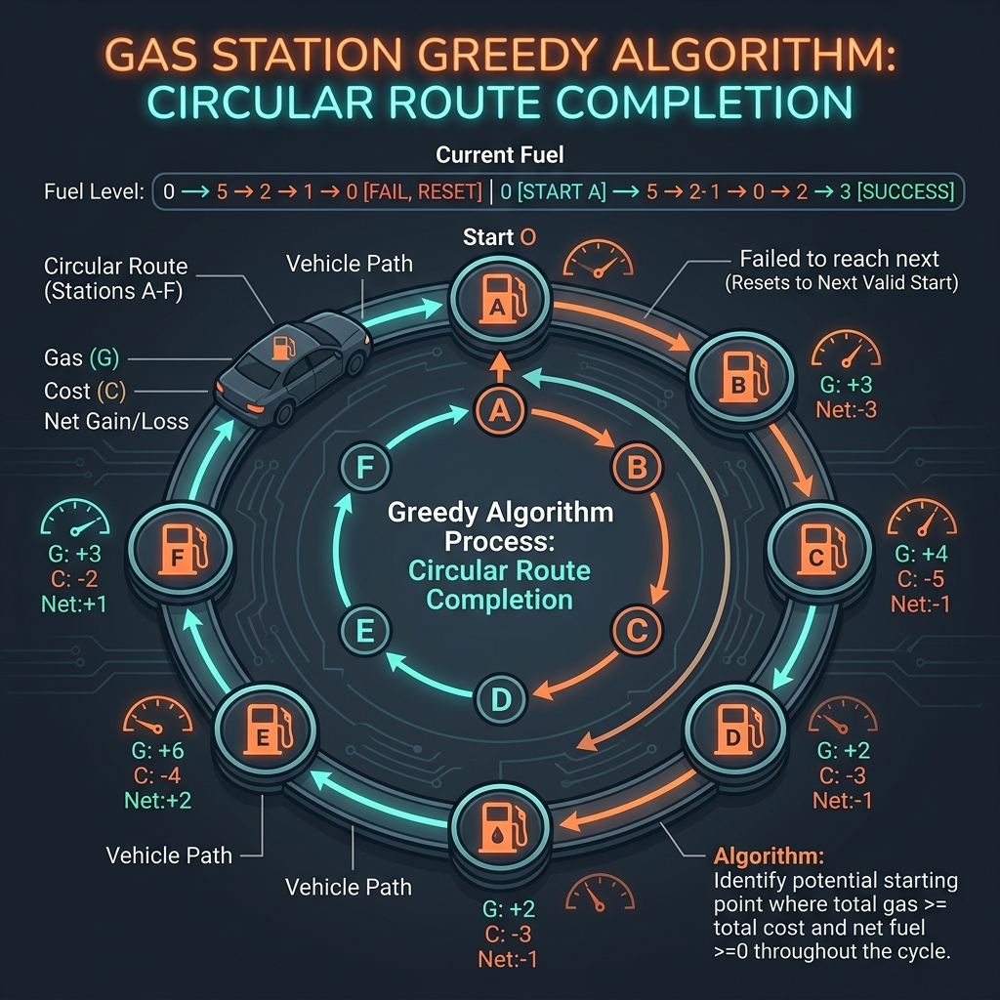

Efficiently managing resources over a circular route is a classic optimization problem. The Gas Station challenge (frequently asked in technical interviews) presents us with a circular route containing N gas stations.
Each station i provides a specific amount of fuel, denoted by gas[i]. We travel in a car with an unlimited gas tank, but moving from station i to the next station i + 1 consumes a certain amount of fuel, denoted by cost[i]. We begin our journey with an empty gas tank at one of the stations.
Our goal is to determine the index of the starting gas station that allows us to complete a full clockwise circuit exactly once without running out of fuel. If completing the circuit is impossible, we return -1. If a solution exists, it is guaranteed to be unique.
A naive brute-force search would test each station as a starting candidate, leading to an O(N²) runtime complexity. However, by leveraging mathematical logic, we can construct a highly optimized, single-pass O(N) greedy solution.

To understand the greedy shortcut, imagine running a circular marathon containing energy checkpoints. Each checkpoint provides a set number of energy bars, while running to the next checkpoint burns a specific number of calories.
Two logical rules apply to this race:
- Global Energy Check: If the total calories provided by all checkpoints combined is less than the total calories required to run the entire track, you can never complete the circuit, regardless of where you start.
- Greedy Start Reset: If you start running at Checkpoint A, but run out of energy at Checkpoint B, this proves that starting at any intermediate checkpoint between A and B will also fail. Why? Because starting at A gave you a surplus of energy when arriving at the intermediate stations, and yet you still ran dry at B. Starting at those intermediate stations with zero initial energy would only make you fail sooner.
B + 1.
Greedy Algorithmic Strategy
To implement this in Java, we track three variables:
totalSurplus: The global net fuel balance (gas[i] - cost[i]) across all stations. If this value is negative at the end of the loop, we return-1immediately.currentTank: The net fuel in our car's tank as we drive between stations.start: The index of our current candidate starting station.
0 to N - 1:
- We add the net gas (
gas[i] - cost[i]) to bothtotalSurplusandcurrentTank. - If
currentTankdrops below0, we cannot reach stationi + 1from our currentstart. We resetcurrentTankto0and update ourstartcandidate toi + 1.
Step-by-Step Scenario Walkthrough
Let's trace the algorithm on a sample configuration: gas = [1, 2, 3, 4, 5] and cost = [3, 4, 5, 1, 2]:
- Station 0: Net is
1 - 3 = -2.totalSurplus = -2,currentTank = -2. SincecurrentTank < 0, we reset:start = 1,currentTank = 0. - Station 1: Net is
2 - 4 = -2.totalSurplus = -4,currentTank = -2. Reset:start = 2,currentTank = 0. - Station 2: Net is
3 - 5 = -2.totalSurplus = -6,currentTank = -2. Reset:start = 3,currentTank = 0. - Station 3: Net is
4 - 1 = 3.totalSurplus = -3,currentTank = 3. We proceed (no reset). - Station 4: Net is
5 - 2 = 3.totalSurplus = 0,currentTank = 6. We proceed.
totalSurplus = 0 (non-negative), completing the circuit is possible. We return the last candidate index: 3.
Key Code Explanations
Here is why the main logic in the solution is important:
totalSurplus += gas[i] - cost[i];: Keeps track of the global energy balance. If it ends up negative, a full cycle is mathematically impossible.if (currentTank < 0) { start = i + 1; currentTank = 0; }: The greedy state transition. When the fuel tank goes dry, it proves all previous nodes are invalid starting candidates, so we jump our starting guess forward to the next index.
Java Implementation Code
Below is the complete, self-contained Java source code that solves this problem. It also includes a main method that traces the execution with console outputs.
package io.practise.dsa;
import java.util.Arrays;
public class GasStation {
// Greedy: Time O(N), Space O(1)
public int canCompleteCircuit(int[] gas, int[] cost) {
if (gas == null || cost == null || gas.length != cost.length) {
return -1;
}
int totalSurplus = 0;
int currentTank = 0;
int start = 0;
for (int i = 0; i < gas.length; i++) {
int net = gas[i] - cost[i];
totalSurplus += net;
currentTank += net;
// If we run out of gas, we cannot start from "start" up to "i"
if (currentTank < 0) {
start = i + 1; // Try starting from the next station
currentTank = 0; // Reset our current fuel tank
}
}
// If the total gas is less than total cost, completion is impossible
return totalSurplus < 0 ? -1 : start;
}
public static void main(String[] args) {
GasStation solver = new GasStation();
int[] gas = {1, 2, 3, 4, 5};
int[] cost = {3, 4, 5, 1, 2};
System.out.println("--- Gas Station Demonstration ---");
System.out.println("Gas values at stations: " + Arrays.toString(gas));
System.out.println("Cost to next stations: " + Arrays.toString(cost));
int startIndex = solver.canCompleteCircuit(gas, cost);
System.out.println("Optimal Starting Index: " + startIndex); // Expected: 3
}
}Conclusion & Complexity Analysis
This greedy algorithm runs in O(N) linear time complexity and uses O(1) constant auxiliary space. By utilizing mathematical bounds to discard invalid candidate ranges, we optimize our resource-allocation check, showing how greedy insights can collapse nested searches into a single pass.